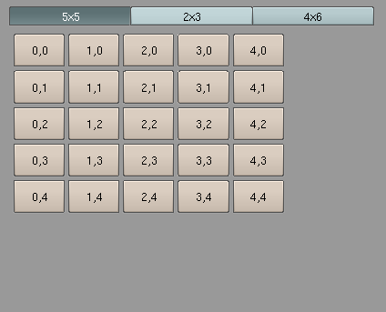

| Home | Trees | Index | Help |
|---|
| Module gui :: Class Tabs |
|
object--+ |Container--+ | Tabs
Container manager (Container subclass)
The container manages other containers, it display single child container at the time. User selects which children is displayed with set of toggle buttons.
Size of Tabs container is calculated as max dimensions of its children. Children widgets are moved to the left-upper corner of the Tabs container.
Example:
# file: ex_Tabs.py
import Blender
import gui
# make interface
interface = gui.Interface()
# make three grid containers
grid1 = gui.Grid(interface, 50, 0, 300, 200, 5, 5)
grid2 = gui.Grid(interface, 0,50, 400, 300, 2, 3)
grid3 = gui.Grid(interface, 20,50, 300, 150, 4, 6)
def fill_grid(grid, cols, rows):
for i in xrange(cols):
for j in xrange(rows):
grid.add( gui.Button(interface, "%d,%d" % (i,j)), i, j)
fill_grid(grid1, 5,5)
fill_grid(grid2, 2,3)
fill_grid(grid3, 4,6)
# pack the container into tab manager
tabs = gui.Tabs(interface, [(grid1, "5x5"), (grid2, "2x3"), (grid3, "4x6")], 10, 10, 20, 5)
interface.register_container(tabs)
interface.run()
# eof

| Method Summary | |
|---|---|
__init__(self,
interface,
containers,
x,
y,
buttons_height,
space)
| |
Draw container and it's content (if container is visible). | |
event(self,
index)
| |
Returns container's geometry. | |
set_geometry(self,
left,
bottom,
unused1,
unused2)
| |
| Inherited from Container | |
Show/hide container and it's children. | |
Returns visibility of container. | |
| Inherited from object | |
x.__delattr__('name') <==> del x.name | |
x.__getattribute__('name') <==> x.name | |
x.__hash__() <==> hash(x) | |
T.__new__(S, ...) -> a new object with type S, a subtype of T | |
helper for pickle | |
helper for pickle | |
x.__repr__() <==> repr(x) | |
x.__setattr__('name', value) <==> x.name = value | |
x.__str__() <==> str(x) | |
| Method Details |
|---|
draw(self)Draw container and it's content (if container is visible).
|
get_geometry(self)Returns container's geometry.
|
| Home | Trees | Index | Help |
|---|
| Generated by Epydoc 2.1 on Mon Jul 18 19:50:44 2005 | http://epydoc.sf.net |